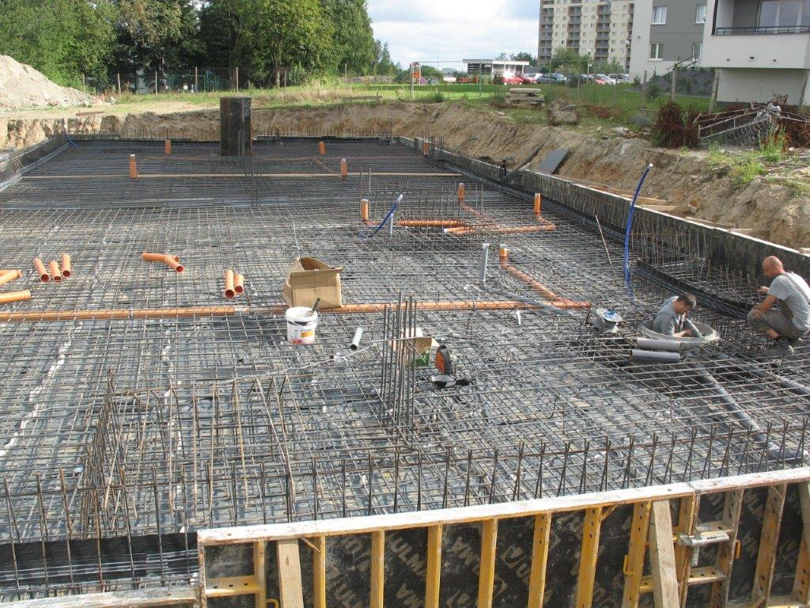
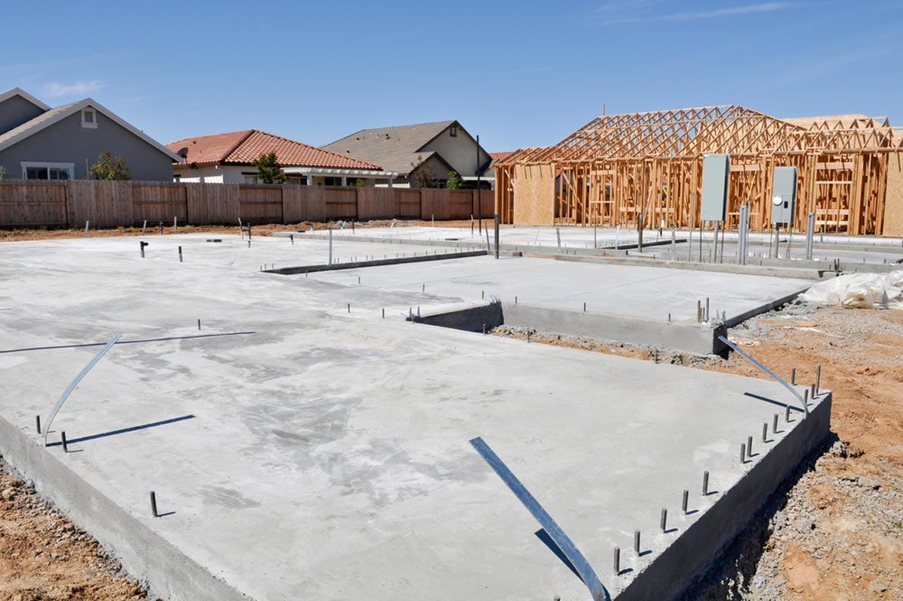
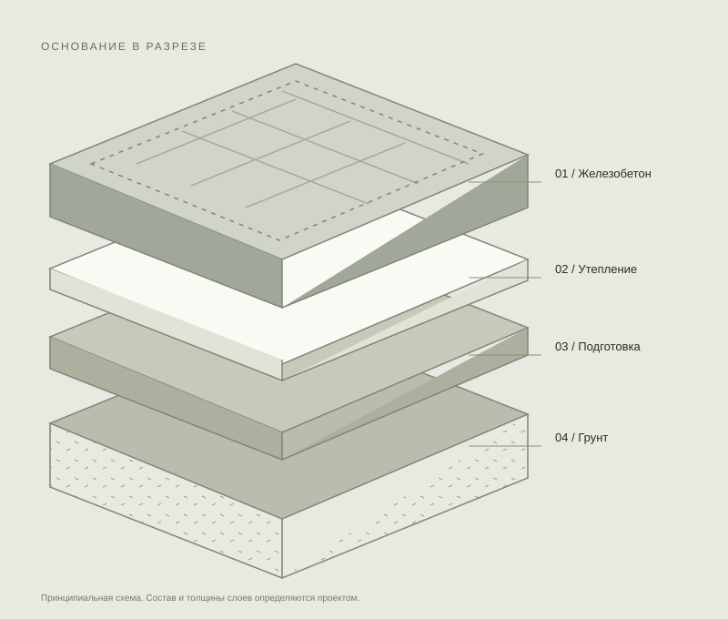
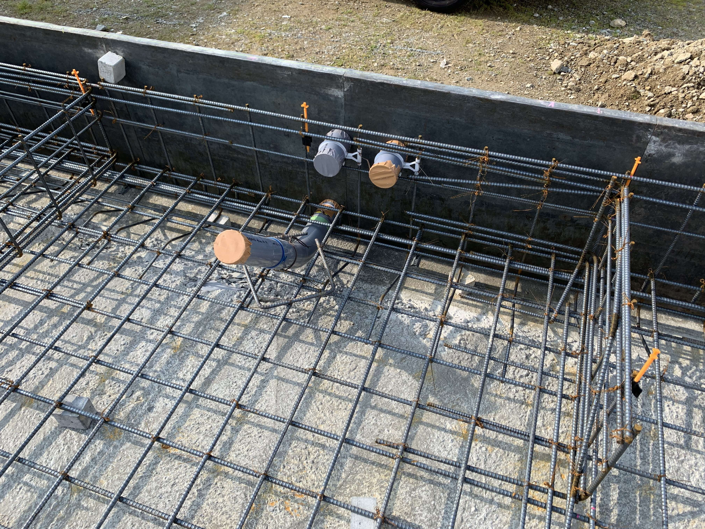

Армирование перед бетонированием
Геометрия, подготовка основания и конструкция по проекту
ФУНДАМЕНТЫ ДЛЯ ЧАСТНЫХ ДОМОВ
Строительство фундаментов под ключ.
От выбора конструкции до готового основания -
с понятным составом работ и сметой.
Для предварительного расчета достаточно размеров дома

01 Решение под грунт и нагрузки
02 Прозрачный состав сметы
03 Контроль скрытых работ
01 / ВЫБРАТЬ ОСНОВАНИЕ
Универсального решения нет. Сравните конструкции,
а окончательный выбор доверьте расчету
с учетом геологии и проекта дома.

ИНЖЕНЕРНЫЙ ПОДХОД
Фундамент связывает дом с участком. Поэтому выбор начинается с грунта, нагрузок и будущих коммуникаций.
Материал стен, этажность и планировка определяют требования к конструкции.
Вводы воды, канализации и электричества увязывают до бетонирования.
Геометрия, армирование и закладные проверяются, пока доступны для осмотра.
ТЕПЛОЕ ОСНОВАНИЕ
УШП объединяет несущую плиту, теплоизоляцию
и предусмотренные проектом инженерные системы.
Все узлы продумываются до начала работ.
Тепловой контурТеплоизоляция под плитой и по периметру помогает ограничить теплопотери через основание.
Теплый полКонтуры водяного отопления размещают в конструкции по проекту инженерных систем.
Вводы коммуникацийРасположение труб и выпусков согласуют с планировкой кухни, санузлов и технических помещений.
Точный проектУШП требует согласованных решений по грунтам, нагрузкам, утеплению и коммуникациям.
02 / ПРЕДВАРИТЕЛЬНЫЙ РАСЧЕТ
Укажите то, что уже известно.
Следующий шаг: уточнить участок, нагрузки
и состав работ для предметной сметы.
Цена зависит от геологии, конструкции, объемов
бетона и арматуры, подъезда техники и коммуникаций.
03 / ОБЪЕКТЫ И ДЕТАЛИ
Важен каждый этап: подготовка основания,
армирование, закладные и уход за бетоном.
Разбираем детали, от которых зависит результат.
Иллюстрации технологии строительства. Фотографии не являются объектами компании.

Геометрия, подготовка основания и конструкция по проекту

Расположение вводов и выпусков по планировке дома
04 / ПРОЗРАЧНОСТЬ В ДЕТАЛЯХ
ПодготовкаРазметка, земляные работы, основание и уплотнение.
КонструкцияОпалубка, армирование, бетон и работы по заливке.
ИнженерияЗакладные и вводы коммуникаций по проекту.
ЗавершениеУход за бетоном, распалубка и приемка работ.
Точный состав зависит от проекта. Дренаж, утепление, гидроизоляцию и вывоз грунта согласовывают отдельно в смете.
05 / ПУТЬ К ГОТОВОМУ ОСНОВАНИЮ
Размеры дома, проект, расположение участка и планы по срокам.
Геология, нагрузки, выбор конструкции и расчет объемов.
Фиксация состава работ, материалов, оплаты и условий гарантии.
Контроль этапов, документы и передача готового основания.
06 / ВОПРОСЫ ПО СУЩЕСТВУ
Тип выбирают с учетом грунтов, уровня подземных вод, нагрузок и конструкции здания. Для обоснованного решения нужны исходные данные и инженерный расчет.
Можно обсудить предварительный бюджет по размерам и материалу дома. Точная смета требует уточнения конструкции, участка и объемов работ.
Изыскания дают данные о грунтах для проектирования. Их состав определяют с профильным специалистом для конкретного участка и здания.
Срок зависит от конструкции, объемов, погоды, доступности техники и требований проекта к уходу за бетоном. График согласуют до начала работ.
ПОЛЕЗНО ПЕРЕД СТРОИТЕЛЬСТВОМ
Сравнивайте решения по данным участка и нагрузкам, а сметы по одинаковому составу работ.
Сравнить конструкцииЗемляные работы, объем бетона, армирование, утепление, доставка и доступ техники.
Перейти к расчетуРазмеры, отметки, уплотнение, армирование, защитный слой и расположение закладных.
Посмотреть этапыПлан дома, материал стен, данные участка и изысканий. Если чего-то нет, начните с консультации.
Обсудить задачуНАЧНЕМ С ВАШЕГО ПРОЕКТА
Расскажите, что хотите построить.
Обсудим исходные данные и следующий шаг.